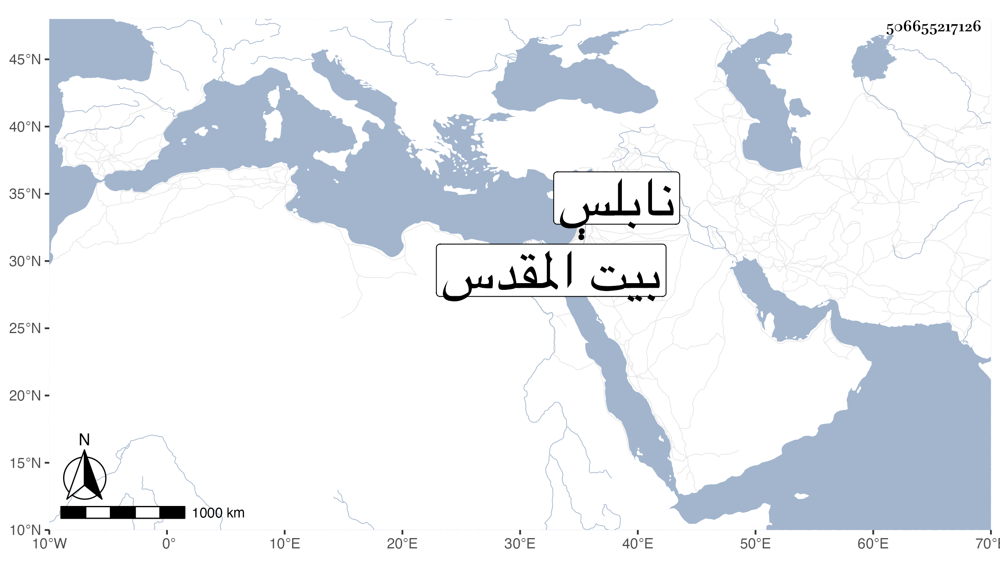

0902Sakhawi.DawLamic.ITO20230111-ara1.EIS1600.506655217126
Biography ID: 506655217126
328
محمد بن محمد بن عبد الله الشمس السلفيتي بمهلة مفتوحة ثم لام ساكنة بعدها فاء مكسورة ثم تحتانية ثم مثناة نسبة لقرية من أعمال نابلس المقدسي الشافعي أحد أصحاب الشهاب بن رسلان . كان فقيها مفننا انتفع به جماعة من تلك النواحي وكان يقيم ببيت المقدس أحيانا وسمع معي فيه على التقي القلقشندي سنة تسع وخمسين .
